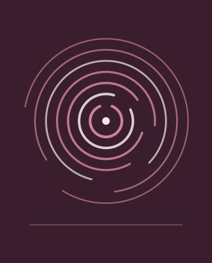

Après une séparation, un lieu pour souffler
Un espace d'accueil, d'écoute, d'orientation et de bien-être pour les mères divorcées, séparées, ou en train de traverser une rupture familiale. Sans jugement, et sans aucune dimension financière.

L'association
L'association accueille, écoute, oriente et propose des activités de bien-être. Elle repose sur trois choses seulement : le respect, la confidentialité et l'absence de jugement.
Elle ne remplace ni les institutions, ni les professionnels de santé, ni les services sociaux. Son rôle est de faciliter l'accès à l'information, de proposer des activités collectives et d'offrir un cadre de soutien moral et social.
Quand une situation demande une compétence que l'association n'a pas, elle oriente vers un professionnel qualifié. C'est une mission à part entière, pas un aveu de limite.
Confidentialité
Ce qui est dit dans l'association reste dans l'association. Aucune photo, aucun nom, aucun témoignage n'est publié sans autorisation explicite.
Sans jugement
Aucun jugement sur le parcours familial, social ou personnel des personnes accueillies. On n'a pas à justifier sa situation pour être reçue.
Sans dimension financière
Le projet est décrit sans composante financière. Ce site ne vend rien, ne collecte aucun paiement et ne demande aucun don.
Orientation
Centres sociaux, médiateurs familiaux, psychologues, éducateurs, associations spécialisées, services administratifs : l'association informe et met en relation.
Comment ça commence
Un premier contact, un entretien d'orientation confidentiel, puis les activités qui vous vont — et rien de plus que ce que vous voulez bien. Le parcours complet est décrit sur la page Services et activités.
Premier contact
Par téléphone, par message, par le formulaire de ce site ou pendant une permanence. Vous n'avez rien à préparer.
Entretien d'orientation
Un échange confidentiel pour identifier le besoin principal. Il ne s'agit pas d'un bilan et rien n'est noté à votre insu.
Parcours proposé
Inscription aux activités utiles, et orientation vers un service extérieur si la situation le demande.
Participation
Aux groupes, ateliers et rencontres, selon vos disponibilités. Venir une fois puis s'arrêter est une réponse acceptable.
Suivi humain
Un point régulier avec une personne responsable quand la situation le demande — jamais imposé.
Les dates
Cette page est volontairement vide de dates.
Ce que le cahier des charges donne, ce sont des fréquences indicatives, et elles sont reprises telles quelles sur la page Services et activités. Ce qu'il ne donne pas — le jour, l'heure, le lieu, la date de la première séance — reste à fixer et est signalé comme tel ci-dessous.